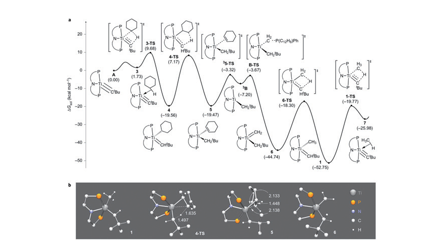

KAIST Top 10
KAIST Top 10
KAIST RESEARCH ACHIEVEMENTS
A Cheap and Efficient Dehydrogenation of Alkanes
Department of Chemistry Mu-Hyun Baik
Summary
Converting simple alkanes to olefins under mild conditions is a highly desirable transformation, because it will transform cheap and plentiful feedstock hydrocarbons into value-added chemical building blocks for the chemical industry. Until now, this reaction was only possible using noble-metal catalysts and under harsh conditions. Continuing our ongoing research on utilizing titanium, a common and highly abundant base metal, we were able to discover a catalytic dehydrogenation reaction of alkanes to make olefins under mild conditions for the first time (Nature Chemistry 2017, 9, 1126). We carry out computer simulations employing Density Functional Theory to understand and predict these reactions and work in close collaboration with our experimental partner of more than 10 years, Prof. Dan Mindiola of Univ. of Pennsylvania. This work directly builds on work that we published in 2016 reporting on the catalytic borylation of methane in the Science magazine (Science 2016, 351, 1424).
Background
Steam cracking of alkanes is an important industrial process for the conversion of volatile alkanes to synthetically useful olefins such as 1-butene, 1-hexene, and 1-octene. Unfortunately, this process requires the high temperature above 800 °C. Until now, this reaction has been the remit of noble catalysts, however,
numerous examples of metal alkylidenes showing similar reactivities exist, but in non-catalytic/ stoichiometric fashion. Importantly, the methylene ylide reacts with a titanium complex (PNP)Ti=CHtBu(CH2tBu) to form a phosphinoalkylidene complex (PNP) Ti=CHPPh2(Ph) and H3CtBu, without the elimination of phosphine. This reaction protocol does not lead to the catalytic olefin formation and the excess ylide H2CPPh3 undergoes in situ decomposition. In this study, we show a new class of phosphorous ylide, CH2P(C12H8)(Ph), avoids decomposition in the titanium catalyzed dehydrogenation of cycloalkanes to produce cyclic and linear alkenes of chain lengths C4-C8 under mild conditions.

Contents
In the present study, we show the dehydrogenation of alkanes using a titanium catalyst with the combination of methylene transfer reagent, such as the phosphorus ylide, as both an oxidant and a hydrogen acceptor. On the basis of the isotopic labeling studies, the reactivity studies and the computational studies, we propose a complete catalytic mechanism of alkane dehydrogenation. The catalyst [(PNP)Ti≡CtBu] undergoes a 1,2-addition of the cyclohexane and subsequently a β-hydrogen abstraction to form a meta-stable cyclohexene adduct, (PNP)Ti(CH2tBu)(η2-C6H10). The dissociation of cyclohexene product is accompanied by the spin crossover to the high spin Ti(II) triplet state. The catalyst regenerates when this triplet intermediate reacts with the phosphorus ylide in a methylidene group transfer mechanism and the P(C12H8)Ph dissociates. This reaction has several key advantages: first, the reaction temperature is lower than the reported homogeneous systems; second, in the case of linear alkanes the titanium alkylidyne selectively reacts at the terminal position. Although the present conditions only allow limited turnovers, we are now in a position to optimize the reaction for practical turnovers because we can readily control the rate to the formation of active catalyst and, in principle, the source of the methylidene transfer reagent. The Figure shows the reaction energy profile of the reaction simulated by our computer models, highlighting the precise mechanism by with the titanium system catalyzes the dehydrogenation of cyclohexane, one of the substrates we have used in this work.
Expected effect
- This approach overcomes the decomposition of the previous phosphorus ylide (H2CPPh3), as well as makes the olefins in a cheap and an energetically efficient condition. We expect this technology to be useful in the industrial synthesis of olefins as feedstocks for valuable materials such as plastic, polymers, and medicines.
Research Funding
his research was supported by the University of Pennsylvania, the National Science Foundation (CHE30848248 and CHE31152123) and the Institute for Basic Science (IBS-R010-D1) in Korea
연구성과
Solowey, D. P.; Mane, M. V.; Kurogi, T.; Carroll, P. J.; Manor, B. C.; Baik, M.-H.; Mindiola, D. J. “A new and selective cycle for dehydrogenation of linear and cyclic alkanes under mild conditions using a base metal” Nat.Chem. 2017. 9. 1126-1132